חברי סגל שלנו בוגרים שלנו סטודנטים שלנו חברי סגל שלנו במדיה: 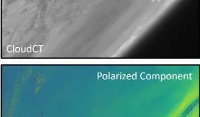 הלוויין שמביט אל תוך העננים: פרופ’ יואב שכנר מהטכניון שותף לפרויקט הישראלי־גרמני ynet.co.il 14.09.26 Prof. Romano from the Faculty Supports Sam Altman’s AI Singularity Claim jpost.com 29.07.26 פרופ’ שחר קוטינסקי דיקן הפקולטה: “אנחנו לא יכולים לבקש יפה מהסטודנטים לא להשתמש ב-AI” 14.06.26 themarker.com ד”ר אפרת שמרון: “בעוד כמה שנים יהיו מכשירי MRI במרפאות קטנות ובאמבולנסים” 02.06.26 themarker.com 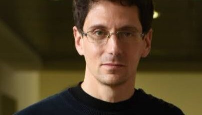 ברכות לחבר הסגל פרופ’ עדו קמינר על קבלת המענק היוקרתי מטעם ERC (האיחוד האירופי) 28.01.26 ynet.co.il פרופ’ יניב רומנו, חבר האקדמיה הצעירה הישראלית וחבר סגל בעל מינוי משותף בפקולטה למדעי המחשב ע”ש טאוב ובפקולטה להנדסת חשמל ומחשבים ע”ש אנדרו וארנה ויטרבי: “הקריירה שלי החלה בטכניון. את מרבית לימודיי לתארים מתקדמים הקדשתי לפיתוח שיטות לשחזור תמונה ממדידה באיכות ירודה – הגדלת תמונה, חידוד ועוד. זכיתי לעבוד עם פרופ׳ מיכאל אלעד, המנחה שלי לדוקטורט, שחשף אותי ליופי שבמתמטיקה. [אחרי הפוסט-דוקטורט] חזרתי הביתה – לטכניון, המקום שחשף אותי לקסם שבמחקר. הסטודנטים והסטודנטיות שבקבוצת המחקר שלי מדהימים, ולכולנו חלום משותף: לפתח טכנולוגיה שבתקווה תעזור לעולם שלנו להפוך למקום טוב ומהימן יותר. עולם שבו בינה מלאכותית תחשוף לנו את האמת. 01.05.26 ynet.co.il פרופ’ שחר קוטינסקי, הדיקן הנכנס של הפקולטה : “הפריבילגיה שלנו באקדמיה [לעומת התעשייה] היא שאנחנו לא מכוונים ללוחות זמנים. ניתן להתפרע עם רעיונות, ולכן פעמים רבות אנחנו נראה רעיון שהבשיל באקדמיה ופרח בתעשייה”. בנוגע לתחרות בין האקדמיה לתעשייה, ציין קוטינסקי את המשכורות הגבוהות בתעשייה, אך הדגיש כי היתרון של האקדמיה היא ביכולת להציע לסטודנטים להוביל תהליכים באופן עצמאי. 08.12.25 themarker.com פרופ’ אביב תמר ופרופ’ שי מנור מהטכניון כתבו עם פרופ’ ישי מנצור מאוניברסיטת תל אביב ספר מבוא בנושא למידה מחיזוקים (reinforcement learning). הספר יראה אור בקיץ הקרוב. 01.11.25 sites.google.com 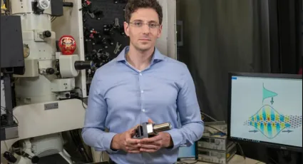 חוקרים בטכניון פיתחו מערכת מבוססת בינה מלאכותית שחשפה קשרים נסתרים בין מאות נוסחאות לחישוב הקבוע π – ממצרים העתיקה ועד החדשות ביותר. פרופ’ עדו קמינר: “זהו תהליך חשוב במיוחד בעידן שבו כמות הידע גדלה בקצב עצום” 02.12.25 ynet.co.il חוקרים באוניברסיטה העברית גילו כי השפעת השדה המגנטי של האור גדולה מכפי שמקובל לחשוב. פרופ’ גדי איזנשטיין מהפקולטה , שלא היה קשור למחקר, אומר כי “זו תגלית חשובה. איש לא ניגש לנושא באופן כזה, ויש לתגלית השלכות פוטנציאליות משמעותיות בחקר החומרים, בגלאים, דימות, ותקשורת.” 19.11.25 jpost.com פרופ’-מחקר מוטי שגב מהפקולטה וד”ר עמית צייזל מהפקולטה להנדסת ביוטכנולוגיה ומזון נכללים ברשימה העולמית של החוקרים המצוטטים ביותר (Highly Cited Researchers) 19.11.25 clarivate.com 6 באוקטובר: ערב עיון לזכרו של נשיא האקדמיה לשעבר פרופ’ יעקב זיו בנושא פועלו המדעי ותרומתו למדינת ישראל. 26.10.25 youtube.com 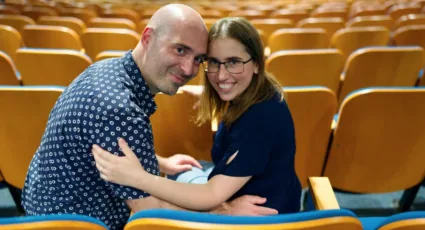 חוקרים צעירים חצו יבשות כדי להיפגש ולהתאהב, התחתנו וחזרו ארצה רק כמה ימים לפני 7 באוקטובר. ד”ר נעמה בן דוד וד”ר דוד וייץ, מגדלים בחיפה שני ילדים, הפכו לחברי סגל בטכניון, ורואים באקדמיה בישראל לא רק שליחות אלא סיפור אהבה 07.08.25 haifa.mynet.co.il 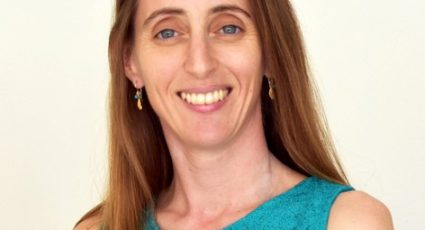 ד”ר אפרת שמרון מהפקולטה ופרופ’ מרט סבונצ’ו ממכון טכניון-קורנל ע”ש ג’ייקובס קיבלו מענק משותף לפיתוח טכנולוגיות המשלבות AI ו-MRI 19.06.25 efratshimron.com פרופ’ יואב עציון, מייסד וטכנולוג ראשי של חברת ספידאטה שגייסה 44 מליון דולר 03.06.25 themarker.com 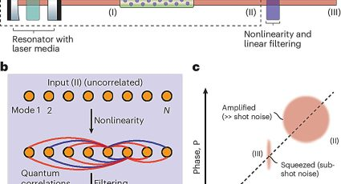 פרופ’ עדו קמינר ב-Nature Photonics: טכנולוגיה חדשה ההופכת לייזרים רועשים לאור קוונטי. 27.05.25 phys.org פרופ’ עדו קמינר מהפקולטה , “הדבר הכי מוזר למי שחוקר קוונטים ומלמד אותם הוא בכלל העולם הקלאסי. זה די מפתיע שהעולם הקלאסי בכלל קיים, שכן ההבנה שלנו את הטבע היא שהיסודות של הכל הם קוונטיים, ובכל זאת אף אחד לא מרגיש שום דבר קוונטי בחיי היום-יום. 13.05.25 haaretz.co.il פרופ’ יוסי קשת מהפקולטה מעורב ב”מודל התמלול המוצלח ביותר בעברית”. 20.04.25 geektime.co.il 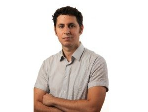 ד”ר אביב תמר מהפקולטה : “למידה מחיזוקים אינה משימה פשוטה ברובוטיקה. יש דברים שילדים יכולים לעשות מצוין ואנחנו לא מצליחים עדיין לגרום לרובוט לעשות אפילו בצורה סבירה. זה אומר שיש כאן בעיה מדעית אמיתית. 11.03.25 ynet.co.il סיפורו של ההומניסט ואיש האשכולות פרופ’ פרנץ (חיים) אוֹלֶנְדוֹרְף שהקים את הפקולטה. הניח את התשתית התיאורטית לפיתוח מכ”מ ופרץ את הדרך לפיתוח מיקרוסקופיית האלקטרונים 30.01.25 ynet.co.il 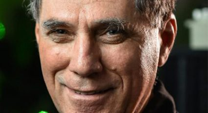 פרופ’ מחקר מוטי שגב מהפקולטה הוא פרופסור מחקר אורח בתוכנית ניל ארמסטרונג. עד כה נבחרו לתוכנית 10 חוקרים בלבד. 11.03.25 engineering.purdue.edu כך תמיכה נשית מייצרת שינוי אמיתי: פרופ’ ליהי צלניק-מנור, המשנה לנשיא הטכניון לחדשנות וקשרי תעשייה, על המנטורית שהשפיעה על חייה האישיים והאקדמיים וחוללה שינוי עמוק בפקולטה, בטכניון ובאקדמיה הישראלית כולה. 18.3.25 walla.co.il 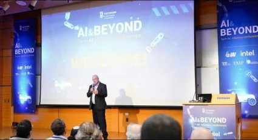 כנס AI&BEYOND Robotics, שאורגן על ידי Tech.AI – שלוחה של המרכז לבינה מלאכותית בטכניון – התקיים היום בפקולטה. הכנס נועד על מנת להפגיש מוחות מובילים מהאקדמיה והתעשייה, במטרה לקדם מחקר ופיתוח בכל הכרוך בממשק שבין בינה מלאכותית לרובוטיקה. 06.02.25 pc.co.il שלושה חוקרים ממכון ויצמן למדע, שלושה מהאוניברסיטה העברית, שניים מהטכניון יקבלו מהאיחוד האירופי מענק “הוכחת היתכנות”, שנועד לסייע להוכיח היתכנות ולקדם את תרגומם של מחקרים אקדמיים ליישום ולמסחור, לרבות הקמת חברות הזנק. פרופ’ יואב שכנר מהפקולטה 23.01.25 ynet.co.il 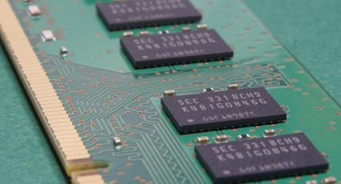 חוקרים בטכניון פיתחו חבילת תוכנה המאפשרת להעביר את החישוב מהמעבד אל תוך זיכרון המחשב עצמו. זהו צעד חשוב לקראת פיתוח מחשבים שיבצעו חישובים בזיכרון, ללא צורך להעביר את המידע בין הרכיבים השונים – העברה הגוזלת זמן רב וצורכת אנרגיה רבה. את הפיתוח הובילה קבוצת המחקר של פרופ’ שחר קוטינסקי מהפקולטה, בהובלת הדוקטורנט אוריאן לייטרסדורף ובשיתוף החוקר רוני רונן. 09.11.24 thehoopsnews.com פרופ’ יוסי קשת מהפקולטה להנדסת חשמל ומחשבים ע”ש ויטרבי הוא המדען הראשי של aiOla המפתחת פתרונות AI מבוססי “שפה טבעית”. שותפו בחברה הוא פרופ’ בהיקשה ראג’, ועל פי הכתבה, “שיתוף הפעולה בין שני מומחים אלה, שהם גם חברים, הוא אבן דרך משמעותית הצפויה לקדם פריצות דרך דרמטיות בתחום הדיבור”.פרופ’ יוסי קשת מהפקולטה להנדסת חשמל ומחשבים ע”ש ויטרבי הוא המדען הראשי של aiOla המפתחת פתרונות AI מבוססי “שפה טבעית”. שותפו בחברה הוא פרופ’ בהיקשה ראג’, ועל פי הכתבה, “שיתוף הפעולה בין שני מומחים אלה, שהם גם חברים, הוא אבן דרך משמעותית הצפויה לקדם פריצות דרך דרמטיות בתחום הדיבור”. 21.10.24 radicaldatascience.wordpress.com 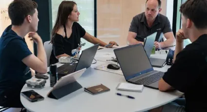 רובופיסיקה: התוכנית הטכנולוגית שמצמיחה את דור ההייטק הבא 01.10.24 themarker.com קווין פייט, טניסאי לשעבר שמשותק ברגליו בעקבות תאונה שעבר לפני 11 שנים, עשה היסטוריה השבוע כאשר נשא את הלפיד האולימפי, בהליכה, הודות למערכת ביונית – מערכת ReWalk שפותחה על ידי בוגר הפקולטה ד”ר עמית גופר. המערכת תוכננה ביקנעם במסגרת חברת ReWalk Robotics. 28.07.24 allisrael.com מה הסיכוי שמישהו יצליח “לכבות את האינטרנט” בישראל? פרופ’ מרק זילברשטיין מספר 26.07.24 themarker.com 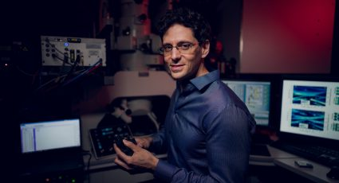 במחקר חדש, שפורסם בכתב העת PNAS, הציגו פרופ’ עדו קמינר והסטודנט רותם אלימלך, את “מכונת רמנג’ואן 2.0”, הממוקדת בסוגיית היחסים בין הקבועים המתמטיים השונים 06.07.24 ynet.co.il 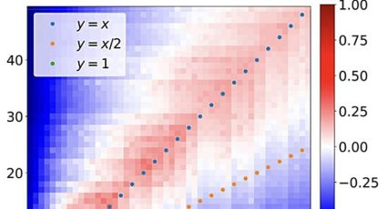 פיתוח של קבוצת המחקר של פרופ’ עדו קמינר מחפש סדר בין קבועים מתמטיים. זהו מחקר המשך שתחילתו ב”מכונת רמנג’ואן”. 24.06.24 phys.org חברת הסגל פרופ’ ליהי צלניק מנור, משנה לנשיא לחדשנות וקשרי תעשייה : “האקדמיה מצאה את עצמה היום במצב שעליה להתעסק בעניינים פוליטיים. להתמודד מול איומי חרם מאוניברסיטאות בחו”ל, איומים מול פרויקטים שנופלים. אנחנו פשוט פועלים כדי להתגבר ולמצוא דרך להמשיך לעשות את אותו הדבר. מנגד, הטכניון עדיין מייצר בכל שנה בין 12 ל-15 חברות, ואפילו אקזיטים”. 18.06.24 themarker.com “האי־ודאות היא הדרך לבנות צניעות לתוך הבינה המלאכותית” חבר הסגל ד”ר יניב רומנו 18.06.24 themarker.com 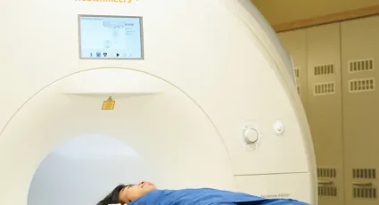 חברת סגל אפרת שמרון – חוקרים הציגו אבטיפוס של מכשיר MRI זול ונייד 12.05.24 haaretz.co.il Noninvasive Technique Tracks Light Through Photonic Circuits by Prof, guy Bartal 13.02.24 optica-opn.org 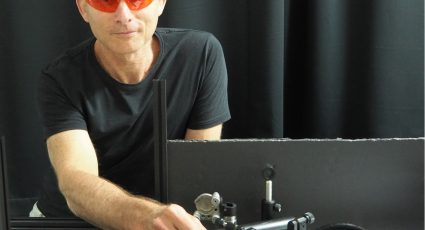 How does light propagate in integrated circuits on chips? Researchers at the Technion are answering this question and paving the way to new applications in communication, imaging, and quantum computing 31.01.24 opli.net 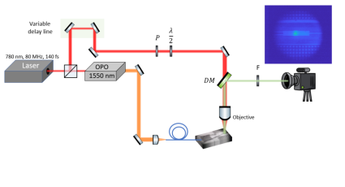 המעבדה למחקר פוטוני מתקדם פרופ’ גיא ברטל והדוקטורנט מתן אילוז והשתתפה בו קבוצת המחקר של פרופ’ אמיר רוזנטל. כיצד מתפשט האור בסיליקון ? חוקרי הטכניון רתמו את התכונות האופטיות של הסיליקון כדי למפות את התפשטות האור בתוכו, זאת ללא צורך בפעולה פולשנית כלשהי המשנה את השבב. 31.01.24 ynet.co.il 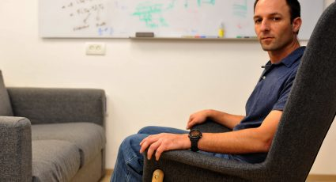 מענקים אירופיים יוקרתיים, פרופ’ שחר קוטינסקי – המענק ישמש לבניית מחשבים המאיצים חישובים על מאגרי נתונים. באמצעות ארכיטקטורת מחשבים חדשנית מתבצעים החישובים בתוך זיכרון המחשב ולא במעבד עצמו. מחשבים אלה יהיו מהירים משמעותית ממחשבים קיימים ויאיצו תוכנות המטפלות במאגרי נתונים עצומים בתחומים שונים ובהם בנקאות, רפואה ורשתות חברתיות. 21.01.24 newshaifakrayot.net 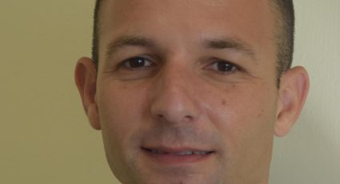 מענקים יוקרתיים ל-11 חוקרים ישראלים, פרופ’ שחר קוטינסקי מהפקולטה יקבל את המענק כדי לקדם מחקר אקדמי ליישום ולמסחור. 18.01.24 ynet.co.il 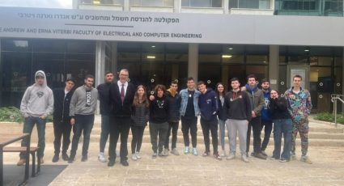 משלחת של 16 תלמידים מאורט רונסון יצאה לשבוע לימודים מרוכז בטכניון, במסגרת תכנית ‘רובופיזיקה’ המופעלת בבית הספר, בשיתוף הטכניון ועיריית אשקלון. הלימודים בתכנית יקנו להם נקודות זכות בעתיד במידה וירצו להמשיך וללמוד בטכניון 24.12.23 kan-ashkelon.co.il 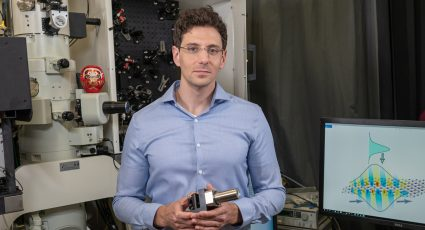 Experimental physicist Prof. Ido Kaminer has been awarded this year’s Stanislaw Lem European Science Prize (Lem Prize) by the Wroclaw University of Technology. 24.11.23 invest-in-wroclaw.pl 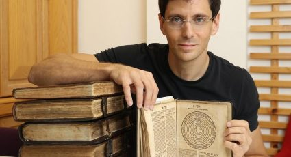 פרופ’ קמינר מהפקולטה להנדסת חשמל ומחשבים ע”ש ויטרבי זכה במענק לפיתוח תיאוריה ופלטפורמה ניסויית חדשנית לתחום חדש במיקרוסקופיית אלקטרונים מהירה: Q-in-PINEM. מחקר זה יתמקד ביצירה של מצבים קוונטיים חדשים ובאיתור של תכונות קוונטיות ייחודיות של חומרים. 23.11.23 ynet.co.il פרופ’ יוסי קשת מתראיין ב YNET עם רענן שקד – על רווחים וחרטות בעולם הבינה המלאכותית 08.09.23 ynet.co.il פרופ’ יוסי קשת מתראיין ב YNET עם דרור פויר – על הדור הבא של “סירי” 04.09.23 ynet.co.il 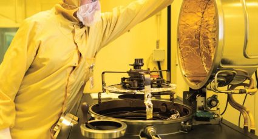 חוקרים מהפקולטה להנדסת חשמל ומחשבים ע”ש אנדרו וארנה ויטרבי יחד עם צוות היחידה לייצור מיקרו וננו (MNFU) במרכז שרה ומשה זיסאפל לננואלקטרוניקה פיתחו לייזרים ייחודיים הפולטים משטח חלל אנכי, המכונים VCSELs, לשימוש בשעונים אטומיים בקנה מידה של שבבים. 03.08.23 ats.org פרופ’ תומר מיכאלי מהפקולטה להנדסת חשמל ומחשבים ע”ש ויטרבי מסביר מהו מודל GAN, שנועד לשחזר תמונות, ומהו הטרייד-אוף המתקיים בו בין יופי לדיוק. בשנת 2017 הציגו פרופ’ מיכאלי והסטודנט יוחאי בלאו מודל המצמצם פער זה, ומאמרם בנושא זה מצוטט כיום על ידי מאות חוקרים 23.8.23 quantamagazine.org קבוצות המחקר של הפרופסורים עדו קמינר מהפקולטה להנדסת חשמל ומחשבים ע”ש ויטרבי, אורן כהן ומיכאל קרוגר מהפקולטה לפיזיקה מציגות פריצת דרך בהבנת התנהגות האור ברמה הקוונטית 23.08.23 haaretz.co.il 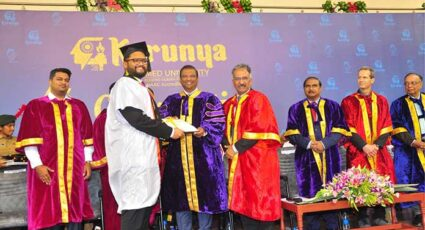 אוניברסיטת קרוניה בהודו [Karunya Deemed University] העניקה תואר כבוד לפרופ’ ישראל כהן מהפקולטה להנדסת חשמל ומחשבים ע”ש ויטרבי על תרומותיו יוצאות הדופן. 13.07.23 nagalandpost.com 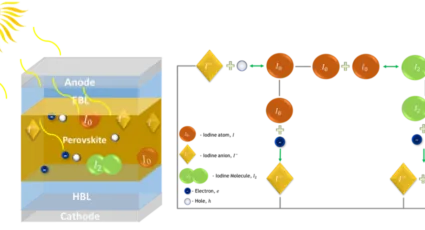 פרופ’ ניר טסלר והדוקטורנטית ספיר ביטון מהפקולטה להנדסת חשמל ומחשבים ע”ש ויטרבי הציגו לראשונה מנגנון התדרדרות פנימי שפוגם ביציבותם של תאי שמש על בסיס פרובסקיטים – תאים הצפויים להשתלב בתאי שמש מסיליקון ובהמשך גם כתאים קלים וחצי שקופים למגוון יישומים אחרים 19.07.23 ynet.co.il 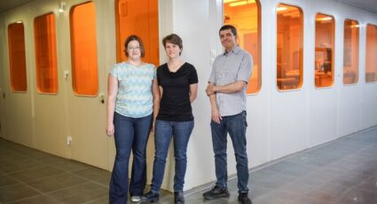 קבוצת חוקרים מהטכניון הינדסה חומר שמראה פוטנציאל לשדרג את תעשיית השבבים. “אנחנו מאמינים שאם נהנדס את התכונות שלו בצורה נכונה, נוכל לייצר ממנו מתג או טרנזיסטור שיידע לעבוד מהר יותר ובצורה חסכונית יותר באנרגיה ממה שהסיליקון מאפשר היום”, אומר ל-N12 פרופ’ ליאור קורנבלום, ראש מעבדת אלקטרוניקה של תחמוצות במרכז שרה ומשה זיסאפל לננואלקטרוניקה 08.07.23 n12.co.il 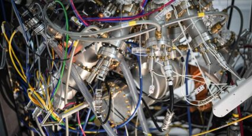 חוקרים בפקולטה להנדסת חשמל ומחשבים ע”ש ויטרבי השיגו שליטה על חומר חדשני העשוי להחליף בעתיד את הסיליקון בעולם האלקטרוניקה. פיתוח זה נחשב חיוני נוכח בלימת מגמת המזעור בעולמות הטרנזיסטורים והשבבים. את המחקר ערכו פרופ’ ליאור קורנבלום, לישי שהם וד”ר מריה בסקין 03.07.23 ynet.co.il פרופ’ עדו קמינר מהפקולטה להנדסת חשמל ומחשבים ע”ש ויטרבי: “תארו לעצמכם אור קוונטי שתוכלו לראות במו עיניכם. זה יהיה מדהים, ויהיו לכך המון יתרונות ליישומים במדעי הקוונטום.” 26.3.23 quantumtech23 עודד גור לביא, בוגר הפקולטה להנדסת חשמל ע”ש ויטרבי, הוא מנכ”ל NT Tao, שמפתחת כור גרעיני קומפקטי. בכתבה הוא מסביר איך זה קשור לפתיחת סתימות במערכת ההשקיה בפרדס ולשירותו בצוללות. 1.2.23 tech12.co.il 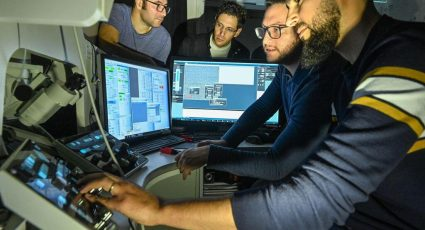 התצפית הפיזיקלית ששופכת אור על טבעם הקוונטי של פוטונים 08.01.23 ynet יו”ר חברת רמון ספייס, פרופ’ רן גינוסר מהפקולטה להנדסת חשמל ומחשבים ע”ש ויטרבי: החלל החדש משמעותו פרויקטים מסחריים עצמאיים מתלות במדינות. הוא אמר את הדברים בפורום מנהלי ההייטק סיליקון קלאב הידען 01.01.23 התקן ננומטרי שפותח בטכניון סולל דרך לטכנולוגיות זיכרון, חישה ומחשוב קוונטי הידען 27.12.22 תרופות מסביב לירח: נבחר הניסוי הראשון של בראשית2 ידיעות אחרונות 25.08.22 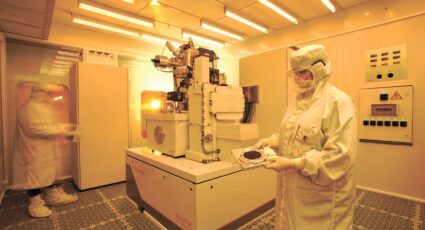 המטרה – לרתום את ההישגים המדעיים בתחום הננו ליישומים תעשייתיים שיתרמו לכלכלת ישראל דה מרקר 01.02.22 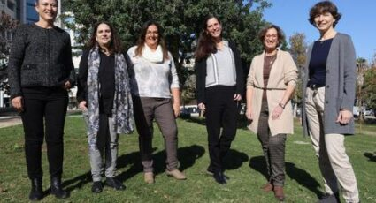 המהפכה הנשית של הטכניון ידיעות אחרונות 29.12.21 פרופ’ דניאל סודרי ברשימת הצעירים המבטיחים בישראל 40/40 דה מרקר 08.11.21 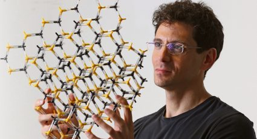 המטאור שחוקר את האור ידיעות אחרונות 28.10.21 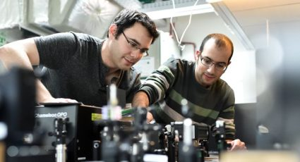 פיתוח ישראלי מאפשר מדידה בזמן אמת של “גלי רפאים” ידיעות אחרונות 06.04.21 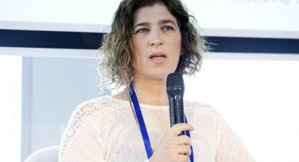 אפליקציה שפותחה בידי עליבאבא ישראל מככבת בחנויות בסין כלכליסט 31.03.2021 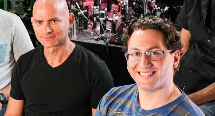 מחקר ישראלי: אם אין מגנטים – תשתמשו באור ידיעות אחרונות 03.03.21 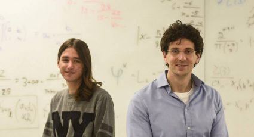 מנגנון בינה מלאכותית חדש יאפשר לחשוף תובנות מדעיות לא ידועות הארץ 03.02.21 רפי ביאר מקים סטארט-אפ תחת קבוצת קורטיקה; יפתח טכנולוגיית AI לשיפור צנתורים דה מרקר 01.03.21 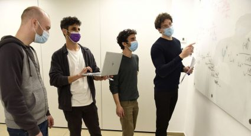 “מחולל השְׁערות” מתמטיות פותח בטכניון ידיעות אחרונות04.02.21 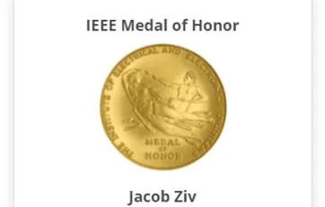 Jacob Ziv Awarded IEEE Medal of Honor For Data Compression i-programmer.info 18.01.2021 דר’ עדו קמינר – הצעירים המבטיחים 2020 דה מרקר 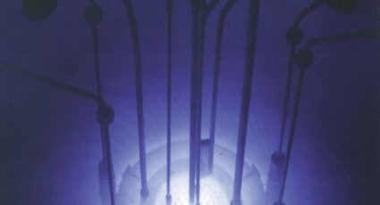 מחקר בטכניון סתר את התחזית של גדול הפיזיקאים הסובייטים הארץ 17.11.20 האיש שבזכותו אנחנו שולחים תמונות. דה מרקר 22.01.21 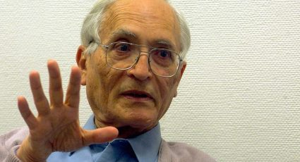 Один из величайших изобретателей в истории человечества живет в Израиле Детали 24.01.2021 חוקרים מיפו את המנגנון המוחי של למידה מוטורית ידיעות אחרונות 30.09.20 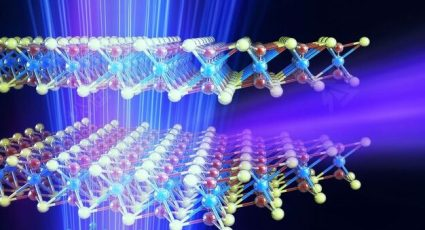 פיתוח: מקורות קרינה מדויקים העשויים להחליף מאיצי חלקיקים ידיעות אחרונות 22.09.20 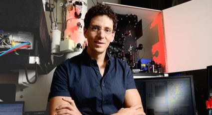 המיקרוסקופ שיאפשר לענות על אחת החידות הגדולות בפיזיקה גלובס 19.09.2020 פיתוח: מערכת למיפוי תלת-ממדי בסופר-רזולוציה ידיעות אחרונות 16.06.20 איך נראה אור ממש מקרוב? ״המיקרוסקופ הקוונטי״ מתעד תופעות שטרם נראו הארץ 03.06.20 אינטל העולמית ממנה שישה ישראלים לתפקידים בכירים וואלה! עסקים 04.02.2021 לראשונה תועדה זרימת אור בתוך גביש פוטוני ידיעות אחרונות 03.06.20 בוגרים שלנו במדיה: דונא ותד, בוגרת הפקולטה, סוללת את הדרך לדור הבא של נשים ערביות בהנדסה 24.09.26 themarker.com גראונדקאבר, שהוקמה על ידי בוגר הפקולטה שחר אזולאי, גייסה 100 מיליון דולר globes.co.il 29.07.26 הם חלמו על הנפקה, אז איך זה נגמר באקזיט של 8 מיליארד דולר? 02.06.26 themarker.com אלעד , שסיים בטכניון תואר ראשון בפיזיקה ובהנדסת חשמל ובמחשבים (בהצטיינות יתרה, תוכנית פסגות) ותואר שני בפקולטה להנדסה ביו-רפואית (בהצטיינות ראויה לשבח), הוא CTO של חברת וונדרפול, שהוקמה לפני שנה וכבר מתקרבת לשווי של 2 מיליארד דולר. 25.02.26 themarker.com תמר הררי, שהשלימה בטכניון תואר ראשון בפיזיקה, תואר שני בהנדסה ביו-רפואית ותואר שלישי בהנדסת חשמל ומחשבים, היא מנכ”לית ומייסדת-שותפה ב-Litevision, הרושמת בימים אלה תקדים היסטורי: היא תקבל את ההשקעה הביטחונית הראשונה בישראל של קרן ההון־סיכון האמריקאית 8VC. Litevision פיתחה מצלמות למל”טים. 22.02.26 globes.co.il 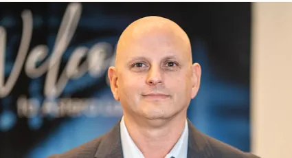 הבכיר שהולך לגייס בישראל מאות עובדים כדי להתחרות באנבידיה גיא אזרד בוגר הפקולטה 15.02.26 globes.co.il בוגרי הטכניון אביעד מייזלס (מדעי המחשב), אסף כגן (פיזיקה, הנדסת חשמל ומחשבים) ודניאל קריגר (הנדסת מכונות, הנדסת חשמל ומחשבים) עומדים מאחורי אקזיט ענק: מכירת הסטארט-אפ Q.ai לאפל בכמעט 2 מיליארד דולר 03.02.26 globes.co.il גיא ברדוגו, בוגר הפקולטה (תואר ראשון ושני), הוא סמנכ”ל למחקר בחברת Wenrix, הנרכשת כעת על ידי קבוצת הזמנת הטיסות השוודית Etraveli. 13.01.2026 themarker.com 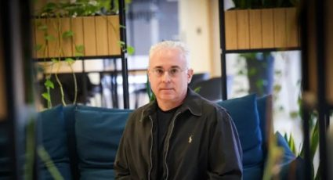 גלעד שיינר, בוגר הפקולטה, הוא סגן נשיא בכיר באנבידיה. בריאיון הוא מסביר לגלובס איך הפכה ישראל ללב המערכת של הואנג 13.01.2026 globes.co.il תא”ל עודד גור-לביא, בוגר הפקולטה (מחזור 1997) ובעבר ראש מספן ים ומפקד שייטת הצוללות בחיל הים, הוא מנכ”ל ומייסד-שותף ב-NT-Tao – החברה הישראלית הראשונה העוסקת בייצור אנרגיה מהיתוך גרעיני, ומטרתה פיתוח כור היתוך זעיר. 24.12.25 timesofisrael.com נריה פוריה ישר, בוגרת הפקולטה מהנדסת תוכנה בוויקס (Wix): “עוד מילדות הייתי “מהנדסת בנשמה” ונמשכתי מאוד למדע ולטכנולוגיה. ההבנה הטכנית והסקרנות היו שם תמיד, ואם כבר הנדסה אז היה לי ברור שזה בטכניון.” 21.12.25 pc.co.il 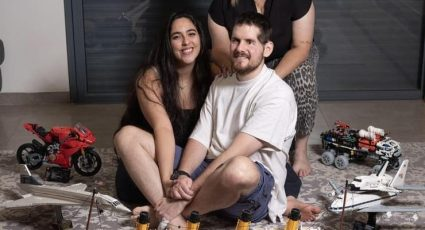 בעולם מקביל, סער גנור גולדשטיין היה עכשיו סטודנט בפקולטה להנדסת מכונות בטכניון. במקום זה הוא משתקם מאז שנפצע מירי RPG בסוף 2023. בת זוגו היא אדל, הלומדת בפקולטה. צילום : יובל חן YNET 30.11.25 ynet.co.il ארז למפרט, בוגר הטכניון במתמטיקה והנדסת חשמל ומחשבים [תואר ראשון] ו-MBA, הוא מנכ”ל Pathkeeper Surgical שהשלימה גיוס ראשוני של מיליוני דולרים וחתמה על הסכם הפצה בשווי של מאות מיליוני דולרים. המכשיר שפיתחה החברה מאפשר ניווט בניתוחי עמוד שדרה ללא שימוש בקרינה, זאת באמצעות מערכת המבוססת על הדמיה תלת-ממדית באמצעות גלי אור בתדר אינפרא אדום, וכן שיפור התמונה באמצעות AI. החברה קיבלה אישור FDA במסלול הקצר 510K ב-2023, וכבר שימשה, לדברי החברה, בכ-130 ניתוחי עמוד שדרה בישראל ובארה”ב. 26.11.25 globes.co.il נעמי כהן, בוגרת הפקולטה , בת 27, פוטרה מעבודה בהייטק – והקימה את לופאפ: הפלטפורמה שמאפשרת למכור ולקנות יד שנייה בקלות, בלי עמלות ובתחושה של “בין חברות”. 25.11.25 srugim.co.il חברת לברון מדיקל (Levron Medical) הוקמה על ידי פרופסור אמיר לנדסברג, אשר שימש בעבר כדיקן הפקולטה להנדסה ביו-רפואית. את החברה מוביל יו”ר הדירקטוריון בוגר הטכניון ד”ר שמעון אקהאוז, ואת תפקיד המנכ”ל ממלא אמיר רונן, בוגר הפקולטה. כעת הודיעה החברה כי היא מקימה קטגוריה חדשה של טיפול באי-ספיקת לב, וזאת באמצעות הטכנולוגיה שפיתחה. 24.11.25 lifestyle.newarklifemagazine.com 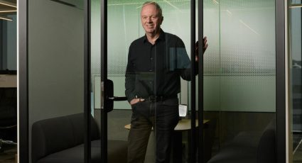 בוגר הפקולטה – מיכאל כגן, ממייסדי מלאנוקס וסמנכ”ל הטכנולוגיות באנבידיה העולמית, מסכם חמש שנים. בראיון הוא נזכר בתקופת לימודיו בטכניון ואומר – “השנה הראשונה בטכניון היתה הכי קשה בחיי”. 16.11.25 calcalist.co.il 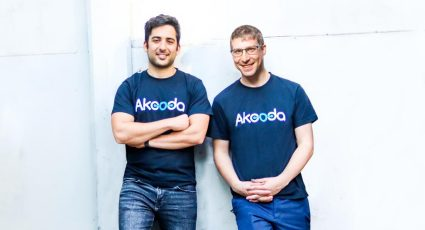 חברת התוכנה טוליפ רוכשת את הסטארט-אפ הישראלי אקודה ומקימה בארץ מרכז פיתוח, אקודה, שנוסדה בשנת 2021 על ידי יובל גונצ’רובסקי (מנכ”ל) ואיתמר נידם (CTO), בוגרי 8200 שהכירו כסטודנטים בטכניון בוגרי הפקולטה 18.11.25 calcalist.co.il אנחנו גאים בבוגרי הפקולטה שלנו שהיו בין מי שהביאו את אינטל לישראל – והפכו את ישראל למעצמת הייטק עולמית. המוחות שלנו ממשיכים להוביל חדשנות שמעצבת את העתיד. 13.11.25 ice.co.il מיכאל כגן, בוגר הפקולטה , הוא מנהל הטכנולוגיות הראשי של חברת אנבידיה, העומדת להקים מרכז בטבעון 16.11.25 globes.co.il תפארת קורנפלד, מהנדסת בכירה בתעשיית ההייטק וילידת אשדוד, הוציאה לאור ספר חדש בנושא חשיבה יצירתית.במגמה פגשה את המורה אירית שליט, בוגרת הפקולטה, שהפכה עבורה לדמות השראה. “אחד התובנות שלי, זה שבני נוער הרבה פעמים מונעים מתוך דוגמה אישית. אני רציתי להיות כמו אירית”, מסבירה קרונפלד. משם המשיכה ללמוד תואר ראשון בפקולטה כעתודאית ביחידה 81, והתפתחה למסלול טכנולוגי עם תפקידים בכירים. 16.09.25 ashdod10.co.il חברת התוכנה הוותיקה ורינט נמכרת ב-2 מיליארד דולר. בועז משעולי ודן בודנר (מנכ”ל) הם בוגרי הפקולטה. 16.09.25 globes.co.il חברת מג’נטיק איי (Magentiq EYE) הישראלית הודיעה על גיוס סבב A בסכום שלא פורסם לצורך השקת המוצר שלה, תוכנה המפיקה תובנות מצילומי קולונוסקופיה, על מנת לשפר את הסיכוי לזהות פוליפים שעלולים להפוך סרטניים. דרור צור, בוגר תואר ראשון ושני בהנדסת חשמל ומחשבים, הוא מנכ”ל החברה. רוני קורנר, בוגר תואר ראשון בהנדסת חשמל ומחשבים ותואר שני במדעי המחשב, הוא מייסד שותף ומנהל שותף. 03.08,25 globes.co.il 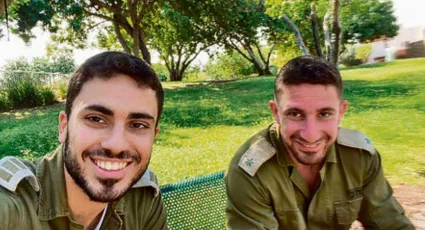 אופק ושחף הר-אבן, תאומים בני 30, יקבלו תואר בהצטיינות מהפקולטה להנדסת חשמל ומחשבים בטכניון. זה יהיה שיאו של מסע משותף 13.07.25 ynet.co.il אנבידיה, החברה הגדולה בעולם מבחינת שווי שוק, עומדת להקים קמפוס ענק בצפון הארץ וצפויה להיות החברה בעלת הנוכחות הגדולה ביותר בישראל. עמית קריג, בוגר הפקולטה, הוא סגן נשיא בכיר באנבידיה להנדסת תוכנה ומנהל מרכז הפיתוח בישראל, ובוגר הפקולטה מיכאל כגן הוא CTO. 06.07.25 calcalistech.com כפיר אברמן, בוגר הפקולטה (תואר ראשון ושני), מונה לראש מרכז הפיתוח של דקארט בסן פרנסיסקו 29.06.25 calcalist.co.il ביליק הארבויה, בוגר הפקולטה, “כששאל עוברי אורח מהי האוניברסיטה הטובה ביותר בארץ, כולם ענו – הטכניון. אז הוא עבר לחיפה.” 06.06.25 themarker.com “חג הביכורים: דרכם של האנשים שהשפיעו על החיים שלנו”. בכתבה מסופר גם על איל וולדמן, בוגר הטכניון. בתו דניאל ובן זוגה נעם שי נרצחו בטבח במסיבת הנובה ב-7/10, ושנה לאחר מכן קיבל את פרט ישראל ליזמות. 02.06.25 i24news.tv 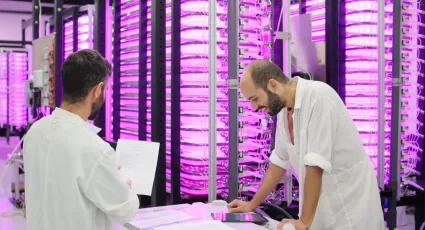 GreenOnyx פיתחה גישה חדשנית להנגשה של ירקות טריים – היישר מהאריזה, ללא צורך לשטוף ולחתך. את החברה הקימו בני הזוג, בוגרי הטכניון שהכירו בתקופת לימודיהם בקמפוס, ד”ר ציפי שהם (ביולוגיה, מנכ”לית החברה) ובני שהם מהפקולטה. 19.05.25 haaretz.com ד”ר עפר גרוזברד, בוגר הפקולטה , על כשל 7 באוקטובר: “ראשי חטיבת המחקר באמ”ן הינם אנשים מוכשרים קוגניטיבית, בעלי חשיבה לוגית מסודרת. אולם יכולותיהם הרגשיות הינן מצומצמות ביותר. זוהי קבוצה סגורה של אנשי צבא, המכירים אחד את השני שנים ומחזקים האחד את חשיבתו הקוגניטיבית של רעהו. הקבוצה הינה סגורה משום הסודיות הנכפית עליהם ועל כן אינה פתוחה לביקורת חיצונית והינה קוגניטיבית גם משום הצורך הצבאי בקבלת החלטות מהירות וממוקדות מטרה.” 05.05.25 kolhazman.co.il • ליאור ארצי (17) בוגר הפקולטה וניצן זיו בוגר הפקולטה למדעי הנתונים וההחלטות מייסדי OX Security • איתמר פרידמן (22) בוגר הפקולטה מייסד Qodo 30.04.25 calcalistech.com 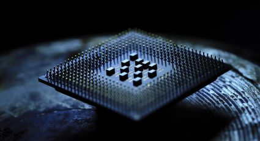 סטארט-אפ השבבים הישראלי-אמריקאי Retym (ריטיים) שהוקם ב-2021 גייס 180 מיליון דולר. החברה מפתחת שבבי רשתות תקשורת נתונים עבור שוק הדאטה סנטר והבינה המלאכותית. אחד משני מייסדי החברה הוא סמנכ”ל הטכנולוגיות ד”ר רוני (אהרן) אל-בחר, שעשה את הדוקטורט שלו בפקולטה וכיום משמש מרצה בכיר בפקולטה. 21.04.25 themarker.co.il בוגר הטכניון אהרון אהרון, שהיה המנכ”ל הראשון של אפל ישראל, סגן נשיא טכנולוגיות חומרה באפל העולמית ומנכ”ל רשות החדשות, ביקר בדרום אפריקה ואמר: “ישראל מעולה בחדשנות כי היא מתמודדת עם בעיותיה שלה באמצעות פתרונות מקוריים וחכמים. דרום אפריקה יכולה ללמוד מזה. היא צריכה להגדיר את הבעיות ולמצוא להם פתרונות, ופתרונות כאלה מבוסים על הגברת הפריון ועל רתימת אנשים לתהליך.” אהרון, בוגר הפקולטה , קיבל ביוני 2023 את “מדליית בוגר הטכניון” 06.04.25 sajr.co.za בוגרי הטכניון בצמרת SatixFy הם ה-CTO ניב מגן וסמנכ”ל השבבים יריב ענפי, בוגרי הפקולטות לפיזיקה ולהנדסת חשמל ומחשבים, וסמנכ”ל המוצר והשיווק גיל שחם וסמנכ”ל המוצרים דני פריי, בוגרי הפקולטה . 03.04.25 globes.co.il ד”ר אלון סטופל, בוגר הפקולטה , הוא יו”ר רשות החדשנות ומדען ראשי לחדשנות במשרד החדשנות המדע והטכנולוגיה. בריאיון איתו הוא מדבר על טכנולוגיה וחדשנות בתקופה הנוכחית. 31.03.25 theinnovator.news 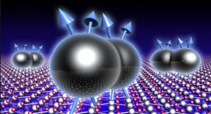 פרופ’ מוטי הייבלום (Heiblum) ממכון ויצמן למדע, בוגר הפקולטה להנדסת חשמל ומחשבים ע”ש ויטרבי, יקבל את הפרס בפיזיקה. הוא הישראלי היחיד בין מקבלי הפרס השנה. הייבלום עוסק בגידול שכבות דקות של חומרים מוליכים למחצה. 11.03.25 ynet.co.il מיכאל כגן, בוגר הפקולטה וה-CTO של אנבידיה, לא חושב שה-AI היא בועה וחושש שישראל תישאר מאחור בתחום זה. 07.03.25 themarker.co.il שירית בלפר שורצבלט, בוגרת הפקולטה, היא דירקטורית בכירה לפיתוח שבבים ומובילת תחום הפורמל וריפיקיישן ב-NVIDIA ישראל. “להורים שלי יש חלק משמעותי בביטחון העצמי שלי, הם הבסיס והעוגן. הם נטעו בי את האמונה בעצמי. זה גם המודל שלי להורות. יש סינרגיה בין היותי אמא ובין היותי מנהלת: האימהות הפכה אותי למנהלת טובה יותר – ולהיפך”. 06.03.25 israelhayom.co.il Security הודיעה כי תרכוש את חברת OTORIO, אשר פיתחה טכנולוגיה המגנה על מפעלים ותשתיות חיוניות מפני מתקפות סייבר. מייסדי ארמיס, יבגני דיברוב ונדיר יזרעאל, הם בוגרי תוכנית המצוינים לפידים בפקולטה למדעי המחשב ע”ש טאוב. דניאל ברן, בוגר הפקולטה, הוא מייסד-שותף ומנכ”ל אוטוריו, ועידו פלד, בוגר הפקולטה למדעי הנתונים וההחלטות, הוא מנהל התהליך הראשי. 06.03.25 globes.co.il 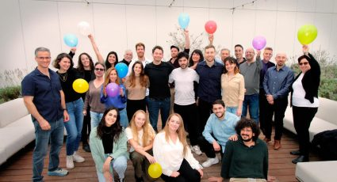 חברת דרוקסי הוקמה בשנת 2022 על ידי רוה בן סימון (CTO) וגדי שנהר (מנכ”ל), שניהם יוצאי 8200 ובוגרי הפקולטה. החברה מעסיקה כ-40 עובדות ועובדים בישראל. גייסה 21 מיליון דולר בסבב A, ומשלים גיוס של 25 מיליון דולר בתוך שנתיים בלבד. 02.12.24 calcalist.co.il יצחק מזור, בוגר הפקולטה. הוא מייסד ומנכ”ל Nanovel. החברה פיתחה רובוט מבוסס AI לקטיף פירות גם כאשר הם מוסתרים על ידי עלוות עלים צפופה. בשלב הראשון יקטוף הרובוט תפוזים ופירות הדר אחרים ובהמשך פירות נוספים. 07.19.24 nocamels.com אסף יגאל, בוגר הפקולטה, הוא CTO ומייסד שותף של Logz.io. 08.11.24 vmblog.com בוגר הטכניון ד”ר רם מחלב ירצה באירוע של GM בנושא סוללות לרכב חשמלי. ד”ר מחלב הוא ראש צוות אלגוריתמים בג’נרל מוטורס ישראל, מרצה עמית בפקולטה, ואת הדוקטורט עשה בטכניון בנושא שיטות במערכות לומדות ו-AI למערכות הספק 15.09.24 geektime.co.il ד”ר יונתן (ג’וני) רוזנפלד, ממייסדי Somite AI ו-CTO שלה, הוא בוגר תואר ראשון בפיזיקה ובהנדסת חשמל ומחשבים, שניהם בהצטיינות יתרה, ותואר MBA שבו היה הציון הממוצע שלו 94.8. החברה משתמשת בבינה מלאכותית כדי לפתח טיפולים חדשניים באמצעות תאי גזע למחלות שונות, והחודש הודיעה על השלמת סבב גיוס של יותר מ-10 מיליון דולר. 03.09.24 maariv.co.il נועה יחזקאל לובין, בוגרת הפקולטה , נבחרה לרשימת הצעירות המבטיחות של פורבס. היא יזמית וראש תחום דאטה בחברת הסטארטאפ Fido המקימה בנקים דיגיטליים באפריקה. כעת היא כתבה ספר על בינה מלאכותית, המיועד לילדים. בשיחה איתה היא מדברת על מחקר עם NASA, על הספר, על בניית בנק באפריקה ועוד 07.08.24 ifatmediasite.com אינסייטק גייסה 150 מיליון דולר נוספים, מה שהעלה את הגיוס המצטבר ל-850 מיליון דולר. החברה פיתחה מערכת המשתמשת בקרינת אולטראסאונד ממוקדת, תחת הנחיה של MRI, כדי לצרוב רקמות בעומק הגוף מבלי לבצע חתך ברקמות הבריאות. עדי גרינברג בוגרת בפקולטה הינה חלק מהנהלת החברה. 19.06.24 globes.co.il ברכות לעמוס מיכלסון בוגר הפקולטהשעשה אקזיט של 73 מיליון דולר על חברת תוכנה קנדית 16.06.24 globes.co.il “אני לא עובד בשביל כסף.” ריאיון עם דב מורן, יזם סדרתי בוגר הפקולטה 14.05.24 makorrishon.co.il “אני זוכר מה זה לחיות בגולה, בלי שיש מדינה חזקה מאחורייך. זו סגירת מעגל עבורי.” אל”מ (מיל’) שאול לוי, בוגר הפקולטה, ישיא משואה בטקס הדלקת המשואות על תפקידו בפיתוח מערכות ההגנה האוויריות של ישראל. בכתבה מתואר הילד שגדל בעיר חאלב שבסוריה, נאלץ לוי לראות את אביו נכנס לבית הסוהר ועובר עינויים קשים ובלתי נסבלים על פעילות ציונית והברחת יהודים לישראל. 09.05.24 finance.walla.co.il אלון ובמן ואורן יוקב, בוגרי הפקולטה , הכירו בטכניון והקימו את Chain Reaction, שפיתחה שבב לכריית מטבעות קריפטו. 13.05.24 calcalist.co.il אל”מ (מיל’) שאול לוי, בוגר הפקולטה, ישיא משואה בטקס הדלקת המשואות על תפקידו בפיתוח מערכות ההגנה האוויריות של ישראל. 05.05.24 facebook.com שלומית וייס עוזבת את אינטל – והחברה תישאר בלי ישראלים בצמרת. וייס מחזיקה בשני תארים מהטכניון – תואר ראשון במדעי המחשב ותואר שני בהנדסת חשמל ומחשבים 17.04.24 geektime.co.il ברכות על האקזיט 👏🏼 עומר בנדיקט בוגר הפקולטה למדעי המחשב וערן אליהו בוגר הפקולטה הם מנהלים בחברה 24.04.24 calcalist.co.il Hailo, המפתחת מיקרו-מעבדים המאיצים יישומי AI, מגייסת 120 מיליון דולר. ה- CTO של החברה הוא אבי באום, בוגר הפקולטה 04.04.24 israel21c חברת הסטארטאפ Hailo הודיעה על גיוס של 120 מיליון דולר ועל מעבד חדש המותאם להרצת יישומי בינה מלאכותית יוצרת (Generative AI) על מכשירי קצה. ה-CTO של החברה ואחד ממייסדיה הוא אבי באום, בוגר הפקולטה 02.04.24 themarker.com ברכות לאיל וולדמן בוגר הפקולטה , חתן פרס ישראל בתחום היזמות והחדשנות הטכנולוגית 28.03.24 ynet.co.il איך הן עושות את זה? הנשים שבשבילן השמיים הם הגבול. הבוגרת שלנו באלביט נטע סגרון בן ישי בוגרת הפקולטה 21.03.24 ynet.co.il בהצלחה לבוגרינו עומר בנדיקט בוגר הפקולטה למדעי המחשב ולערן אליהו בוגר הפקולטה להנדסת חשמל ומחשבים 17.03.24 themarker.com אלון גונן, יזם, בוגר הפקולטה , הקים את החברה הראשונה שלו בשנתו הראשונה בטכניון 08.03.24 themarker.com רפי נוה, בוגר הפקולטה, היה אחד מארבעת המהנדסים הראשונים באינטל 08.03.24 jpost.com פרס של 1.3 מיליון דולר לחברות סטארטאפ בתחום האקלים. אחת החברות היא TIGI Solar, בראשות המנכ”ל צביקה קליר, בוגר הפקולטה להנדסת חשמל ומחשבים ע”ש ויטרבי. החברה פיתחה קולט שמש חדשני המייצר חום בנצילות גבוהה מאד גם כאשר מזג האויר קר וגם כאשר נדרשת טמפרטורה גבוהה. 06.03.24 calcalistech.com דרור צור, בוגר הפקולטה להנדסת חשמל ומחשבים ע”ש ויטרבי, הוא מנכ”ל Magentiq Eye המפתחת טכנולוגיות מתקדמות של עיבוד תמונה ולמידה חישובית כדי לעזור לרופאים בביצוע פרוצדורות אנדוסקופיות. הטכנולוגיה, שכבר נמצאת בשימוש באירופה ובארצות הברית, סוקרה לאחרונה בכתב העת Lancet Digital Health, שם נקבע כי היא משיגה תוצאות מעולות באבחון פוליפים וגידולים. 06.03.24 nocamels.com נתנאלה קליין, שהשלימה בטכניון תואר ראשון בפיזיקה ובהנדסת חשמל ומחשבים, היא מנהלת מוצר ראשית בחברת Soli. “שניים מאחיי למדו בטכניון לפני וזה היה עבורי חלום ללמוד בטכניון. כשהגיע הזמן ללכת לאוניברסיטה לא הייתה לי שום התלבטות.” 31.01.2024 blogs.timesofisrael.com סטארט-אפ הבינה המלאכותית הישראלי Ask-AI השלים סבב גיוס A בגובה של 11 מיליון דולר, בהובלת קרן Leaders Fund הקנדית. המערכת של החברה מנתחת נתונים ומאפשרת לקבל תשובות לשאלות שקשורות לתמיכה בלקוחות, ניהול מוצר, מו”פ ומכירות. מייסד החברה והמנכ”ל הוא אלון טלמור, שהשלים בטכניון תואר שני בפקולטה למדעי המחשב ע”ש טאוב, וסמנכ”ל המו”פ הוא אייל מדר, בוגר הפקולטה, שניהם בהצטיינות יתרה. 10.01.2024 themarker.com חברת הגנומיקה הישראלית-אמריקאית C2i תירכש ע”י Veracyte מארה”ב ביותר מ-90 מיליון דולר. ד”ר בוריס אוקלנדר, מנכ”ל ומייסד שותף ב-C2i, בוגר הפקולטה. 08.01.2024 globes.co.il הממשלה אישרה את מינויו של ד”ר אלון סטופל בוגר הפקולטה ליו”ר הרשות הלאומית לחדשנות 07.01.24 calcalist.co.il פורטליקס (Foretellix), שפיתחה מערכת לבדיקות ואימות מערכות נהיגה אוטונומית, משלימה גיוס מצטבר של 135 מיליון דולר. אחד ממייסדי החברה הוא גיל אמיד, בוגר הפקולטה 05.12.23 themarker.com ואסט דאטה (VAST Data) עומד להשלים סבב גיוס גדול שיקפיץ אותה לשווי של 9 מיליארד דולר. החברה פיתחה פלטפורמת אחסון מבוססת פלאש, שמסוגלת באמצעות אלגוריתמים מתמטיים לכווץ את היקף המידע ולייעל את האחסון שלו. אבי גורן, אחד ממייסדי החברה וכיום המדען הראשי שלה, הוא בוגר הפקולטה 05.12.23 themarker.com חברת Droxi הוקמה על מנת לסייע לרופאים להתמודד עם העומס הבירוקרטי והלוגיסטי, בעזרת טכנולוגיות בינה מלאכותית מתקדמות.החברה הוקמה על ידי רוה בן סימון וגדי שנהר בוגרי הפקולטה. 09.11.23 themarker.com שש חברות ישראליות מופיעות ברשימת ההמצאות השנתית של מגזין טיים, מתוכן 1 בהובלת הבוגרים שלנו וויליוט המפתחת שבב מתכלה להדבקה על מגוון גדול של מוצרים. טל תמיר, אלון יחזקאלי וירון אלבוים הם הבוגרים שלנו, כל הכבוד. 24.10.23 time.com דליה חיים, בוגרת הפקולטה להנדסת חשמל ומחשבים ע”ש ויטרבי, היא דירקטורית בקבוצת הסיליקון באפל ישראל וחברה בפורום Women at Apple. 15.10.23 chiportal.co.il דורון שטרמן השלים תואר כפול בהנדסת חשמל ומחשבים ובפיזיקה במסגרת תוכנית הטכניון למצוינים והמשיך לתואר שני ושלישי (כרגע בעיצומו) בפקולטה להנדסת חשמל ומחשבים ע”ש ויטרבי. שטרמן הוא מנכ”ל חברת הלוויינים הישראלית ISI, שהייתה מעורבת הקיץ בשיגורו של הלוויין הישראלי RUNNER 1. 18.08.23 ynet.co.il הסוף לטביעת ילדים? הפתרון הישראלי שיאפשר רחצה בטוחה בבריכה. מייסד החברה הוא בוגר הפקולטות להנדסת חשמל ומחשבים ופיסיקה 26.07.23 mako.co.il מייסדי החברה הם רונן חייט בוגר הפקולטה להנדסת חשמל ומחשבים ומנהל עסקים ודני וולקינד בוגר הפקולטה להנדסת חשמל ומחשבים 17.07.23 networkworld.com תא”ל עודד גור-לביא, בוגר הפקולטה להנדסת חשמל ומחשבים ע”ש ויטרבי ובעבר ראש מספן ים ומפקד שייטת הצוללות בחיל הים, הוא מנכ”ל ומייסד-שותף ב-NT-Tao. על פי הכתבה, NT-Tao היא החברה הישראלית הראשונה העוסקת בייצור אנרגיה מהיתוך גרעיני, ומטרתה פיתוח כור היתוך זעיר. 19.17.23 timesofisrael.com מיכאל כגן, בוגר הפקולטה להנדסת חשמל ומחשבים ע”ש ויטרבי – במקום השני בעשיריית ה-CTOs הטובים ביותר באזור אירופה, המזרח התיכון ואפריקה. כגן התמנה לתפקידו הנוכחי ב- Nvidiaבשנת 2020 עם רכישתה של מלנוקס, שבה היה CTO ומייסד שותף. 19.07.23 technologymagazine.com בלקסטון לקראת השקעה משמעותית בסטמפלי הישראלית. מייסד החברה עפר פלדמן הוא בוגר הפקולטה להנדסת חשמל ומחשבים 03.07.23 calcalist.co.il “הציעו לי צ’ק של 30 מיליון דולר כדי לפתח שבב. הבנתי שיש פה משהו מטורף” 02.07.23 themarker.com סמנכ”ל הטכנולוגיה של ImageSat , דורון שטרמן – בוגר תואר כפול בטכניון (פיזיקה והנדסת חשמל ומחשבים) וכיום דוקטורנט בפקולטה להנדסת חשמל ומחשבים ע”ש ויטרבי. שטרמן, בוגר ישיבות ההסדר בחברות ובירוחם, התוודע לעולם החלל כשהתנדב לשירות מלא במשרד הביטחון. דורון שטרמן, סמנכ”ל טכנולוגיה באימג’סאט : רעיון לעשות צל על כדור הארץ להורדת כמות הקרינה שמגיעה מהשמש, שיתוף פעולה עם מכון אשר בטכניון ומרכז מחקר החלל באיחוד האמירויות להדגמה באמצעות לווין. 15.06.23 space.gov.il עדי אשור, ראש צוות פיתוח בחברת הסייבר “למינר”, היא בוגרת תואר כפול – פיזיקה והנדסת חשמל ומחשבים – במסגרת תוכנית העתודה “פסגות”. נשים ומחשבים: עדי אשור, למינר מדור מיוחד על נשים בתפקידים שונים בתעשייה: מיהן? מה הביא אותן לעולם הטכנולוגיה? והאם הן חושבות שיש בענף אפליה? ● והפעם: עדי אשור, ראש צוות פיתוח בלמינרר 15.06.23 pc.co.il זהר זיסאפל היה מחלוצי ההייטק הישראלי, וקבוצת רד־בינת, שייסד עם אחיו יהודה, הולידה יותר מ־100 חברות שהפרו את אומת הסטארט־אפ. 24.05.23 calcalist.co.il גלעד שיינר, סגן נשיא בכיר למחשוב-על ותקשורת באנבידיה, על החלטת החברה להקים בישראל, בהשקעה של מאות מיליוני דולרים, את אחד ממחשבי-העל המהירים בעולם: “הביצועים האלה יהפכו את Israel-1 לאחד ממחשבי העל החזקים בעולם. “ההקמה שלו שמה את ישראל בחזית מהפכת הבינה המלאכותית. המחשב יתחיל לעבוד לפני סוף השנה והוא מייצג השקעה מאוד משמעותית של אנבידיה בישראל.” שיינר השלים תואר ראשון ושני בפקולטה להנדסת חשמל ומחשבים ע”ש ויטרבי. tech12.co.il הכירו בטכניון, נישאו – ויחד הקימו חברת סטארטאפ המבקשת לשנות את האופן שבו נצרוך ירקות. השניים הם ד”ר ציפי שהם, בוגרת הפקולטה לביולוגיה, ובני שהם, בוגר הפקולטה להנדסת חשמל ומחשבים ע”ש ויטרבי 4.6.23 N12 “לפעמים מרגיש לנו שהעולם כולו נגדנו ושהכול שחור… אבל, חשוב תמיד להתמקד בדברים החיוביים, עם דגש ענק על האנשים הטובים שיש לצדכם ברגע זה ממש.” מישה קלינוב עלה לבדו בגיל 13 במסגרת תוכנית נעל”ה, השלים תואר ראשון בפקולטה להנדסת חשמל ע”ש ויטרבי והמשיך לתואר שני בפקולטה. כעת הוא מושיט יד לילדים שהגיעו מאוקראינה מעריב 8.5.23 “המדינה מתעללת במי שמשלם מסים”: מיליארדר השבבים שעזב לבקתה באלפים שובר שתיקה 14.4.23 www.globes.co.il ד”ר דפנה וסרמן-פלטי, שהשלימה בטכניון תואר ראשון בהנדסת חשמל ומחשבים ותואר שני ושלישי בהנדסה ביו-רפואית, היא מנכ”לית Eye-Minders, המפתחת טכנולוגיה העשויה להחליף את מכשיר הפוליגרף. הבדיקה מבוססת על ניתוח תזוזת העיניים של הנבדק. לאחרונה השיקה החברה מוצר שנועד להפחית את תופעות הלוואי (בחילות, סחרחורות ועוד) בקרב המשתמשים במשקפי מציאות מדומה. 29.3.23 israel21c ד”ר גיל בכר, שהשלים תואר שני ושלישי בפקולטה להנדסת חשמל ומחשבים ע”ש ויטרבי, הוא מנכ”ל Magna Mater Medical – חברה המפתחת טכנולוגיות לשיפור תהליכי שאיבה ומיון של ביציות להפריה חוץ גופית. הוא ייסד את החברה עם ד”ר קטי שלוש, מנהלת מחלקת ההפריה החוץ גופית במרכז הרפואי לגליל בנהריה. 28.3.23 pc.co.il שלושה חוקרים חשפו ופענחו את המכתבים המוצפנים של מרי מלכת הסקוטים המתוארכים לשנת 1578 עד 1584. אחד החוקרים הוא ג’ורג’ לסרי מדען מחשב וקריפטוגרף בוגר הפקולטה להנדסת חשמל ומחשבים 9.2.23 ynet סטס גופרמן רוצה להנגיש טכנולוגיה ״שתהיה מיינסטרים ככל האפשר״ 8.1.23 www.prtfl.co.il ראיון עם נרקיס גאולי, מהנדסת שבבים באנבידיה, בוגרת הפקולטה להנדסת חשמל ע”ש ויטרבי 04.01.23 chiportal.co.il גישה חישובית שפותחה בטכניון תאיץ את שילובם של מקורות אנרגיה מתחדשים ברשת החשמל הידען 23.08.22 אחרי 52 שנה: קיבל את תעודת הסיום בטכניון ידיעות אחרונות 18.08.22 מתרשיחא ועד לצמרת עמק הסיליקון: היזם הישראלי הסודי של אמזון נחשף גלובס 04.08.22 “תקימו חברות. אל תחכו שהשוק יהיה נפלא — לקרנות יש כסף להשקיע” דה מרקר 02.08.22 האחים יהודה וזהר זיסאפל חנכו בטכניון את “הבניין ע”ש זיסאפל להנדסת חשמל ומחשבים” צ’יפ פורטל 21.06.22 האחים יהודה וזהר זיסאפל חנכו בטכניון את “הבניין ע”ש זיסאפל להנדסת חשמל ומחשבים” IT News 20.06.22 עמיר עברי, בן 29, חוקר ומפתח מערכות בינה מלאכותית, מיקרוסופט ישראל מחקר ופיתוח פורבס 14.03.22 רפאל מינתה את ד”ר יהודית הוכרמן-פרומר לסמנכ”לית בכירה למו”פ דה מרקר 09.01.22 אפל, גוגל ואינטל משלבות ידיים בצעד חריג. המטרה: עוד מהנדסי שבבים גלובס 20.12.21 דר’ דני וויצחוב ברשימת הצעירים המבטיחים בישראל 40/40 דה מרקר 08.11.21 מצמרת שב”כ לשת”פ עם פולקסווגן: “נכשיר בוגרי גולני לסייבר, יש לנו חוב עבורם” כלכליסט 28.09.21 בימר הישראלית זכתה בפרס אמי על פיתוח טכנולוגיה לשיפור דחיסת וידאו כלכליסט 26.01.21 אחרי שמכר חברות במיליארדים – אביגדור וילנץ שובר שתיקה וחושף איך עושים את זה דה מרקר 26.02.21 חבר הכנסת יזהר שי ימונה לשר המדע והטכנולוגיה מעריב 14.05.2020 סטודנטים שלנו במדיה: סיפורו של רותם קנדל בן ה-28 לא נשמע בכל יום • על אף שהמציאות בה חי סחררה אותו במשך כמעט שנתיים, הוא הצליח לשמור על שגרת לימודים בטכניון, בעודו לומד לתואר כפול בפיזיקה ובהנדסת חשמל ומחשבים 30.10.25 israelhayom.co.il סטודנטים מילואמניקים מהפקולטה יזמו את ‘שעה של פוקוס’ – פרויקט התנדבות במסגרתו סטודנטים מעניקים שיעורי זום חינם למאות תלמידי תיכון שפונו בגלל המלחמה 29.06.25 mynet.co.il Women in Research Blog – Sapir Bitton 27.06.24 womeninresearchblog.com מ-180 תלמידים מפונים מהדרום ומהצפון הגיעו לתוכנית “רובופיסיקה” היוקרתית בטכניון. 23.05.4 ynet.co.il ללמוד, לחיות: מהמסיבה ברעים, ללחימה בעזה ובחזרה לספסל הלימודים 07.02.24 israelhayom.co.il מאמר מדעי וכנס בין-לאומי – כבר במהלך התואר הראשון לסטודנטית בטכניון Chiportal 15.08.22 השיטה למיפוי אוכלוסיית הפלנקטון באוקיינוסים ובנהרות ידיעות אחרונות 08.06.22 הפיתוחים הרפואיים שיצילו חיים ערוץ 12 19.12.17 האקתון קורונה לזכרה של דגנית גליק – ראיון ערוץ 13